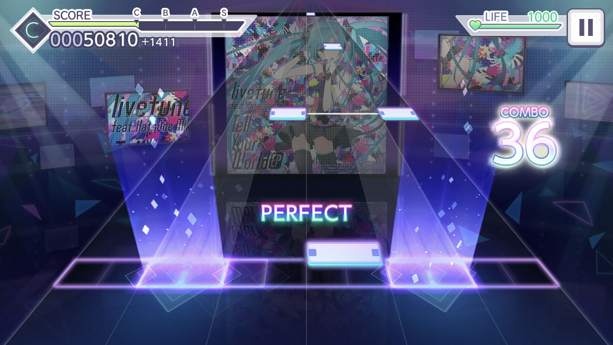
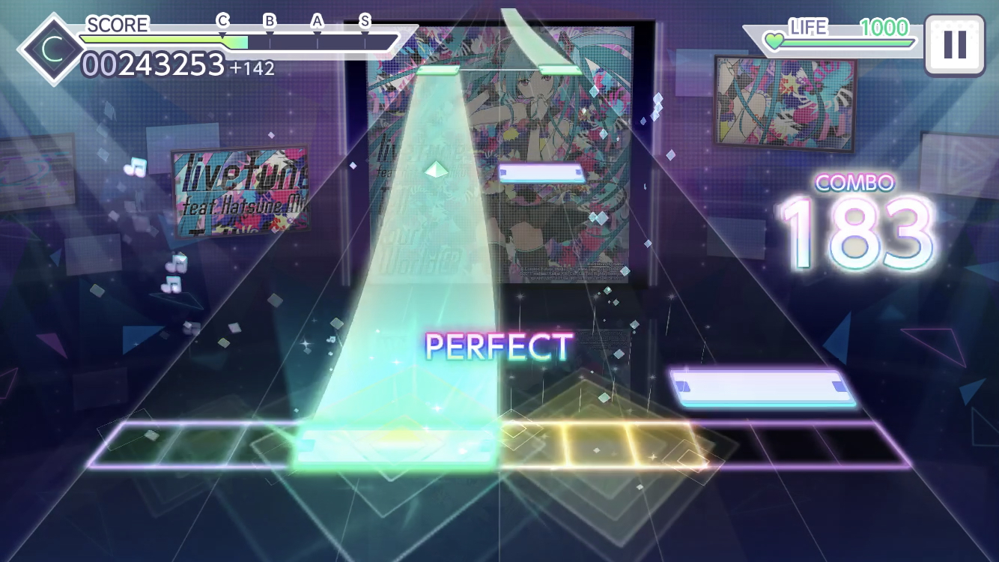
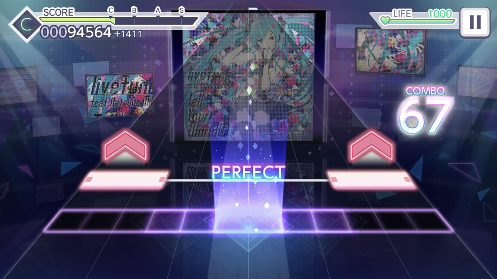
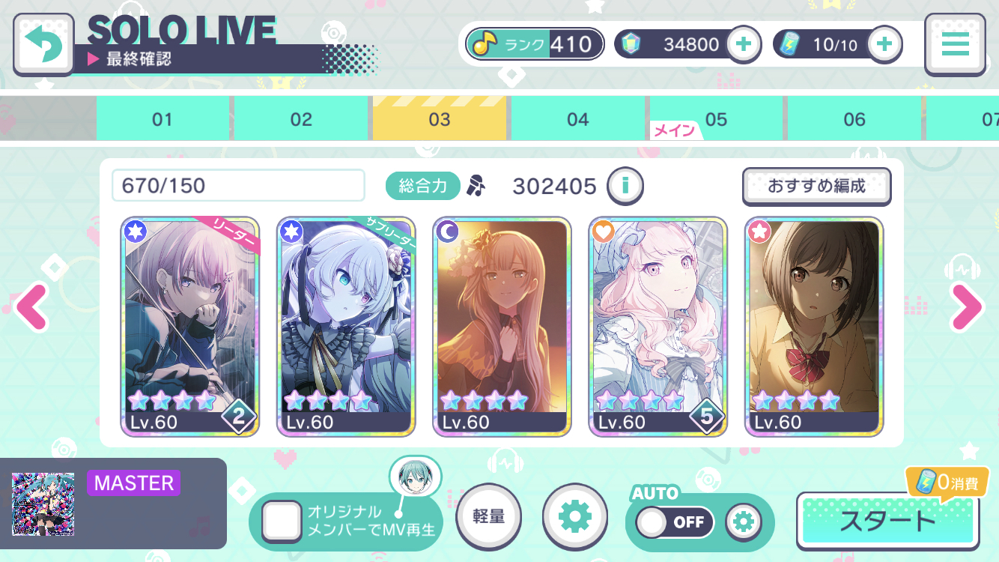
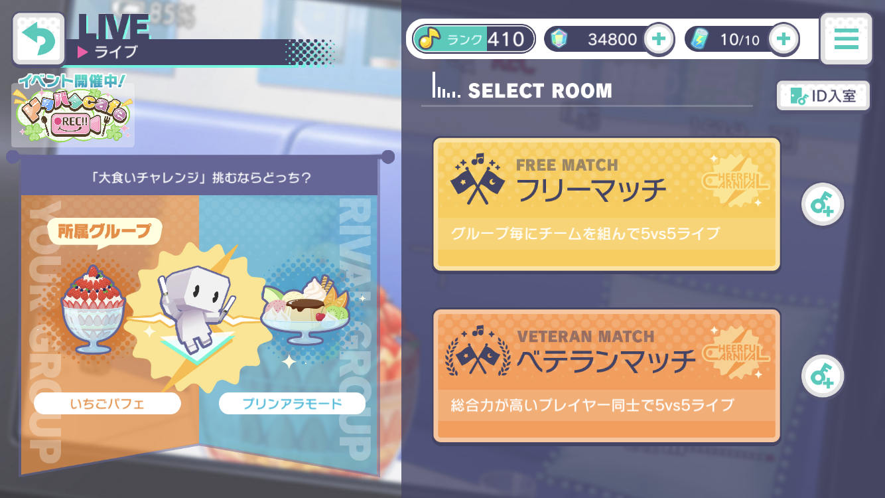
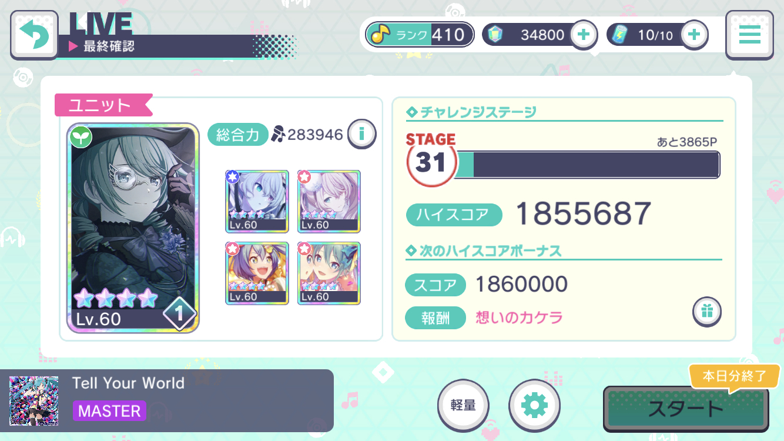
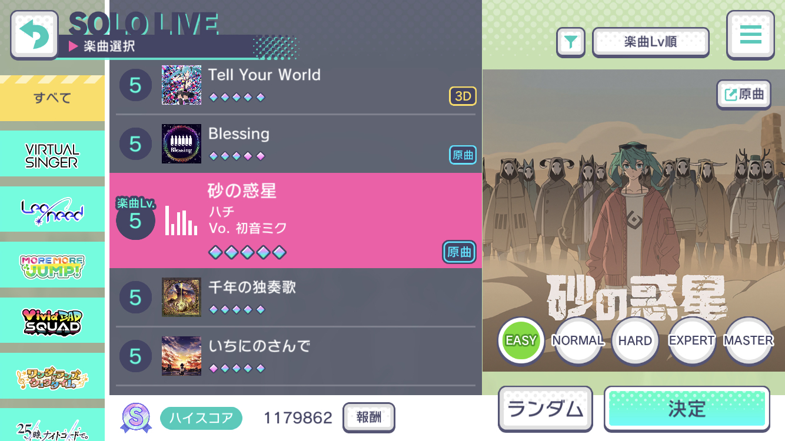
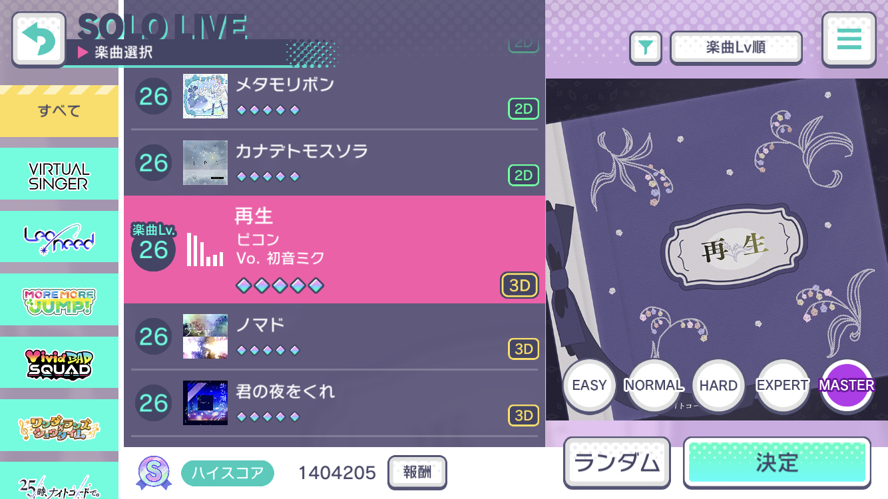
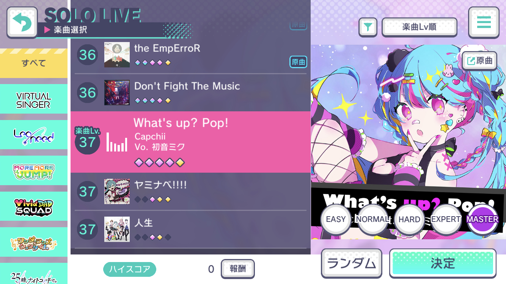

遊び方
基本の遊び方を紹介します。
これを読んで、実際に遊んでみましょう！
ノーツの種類

- 単ノーツ
- 基本のノーツ。判定ラインに来た瞬間に画面をタップします。

- ホールド
- 緑の区間が終わるまで画面を押し続けます。

- フリック
- 赤または金色の矢印付きのノーツは上下左右いずれかの方向に弾くように押します。難易度の高い譜面では、弾く方向が指定されたノーツもあります。コツをつかむまで練習しましょう。
ライブの種類

- ひとりでライブ
- ひとりで遊ぶモード。好きな曲を自由に練習できます。

- みんなでライブ
- 自動マッチングまたは知り合いと5人でライブをします。ひとりでライブよりもらえる報酬が多くなります。曲のリクエストが複数合った場合はルーレットで決まります。

- チャレンジライブ
- 1日1回できるライブです。スコアの高さを競います。報酬が良いので、毎日欠かさずやりましょう。
譜面の難易度
各曲には5種類の難易度があり、初心者から超上級者まで楽しむことができます。

- 最も簡単
- 全くの初心者でも遊べるような、最も簡単な譜面ですが、中級者が精度を向上させるトレーニングとしても使えます。

- 中級
- 遊べる曲数はどんどん増加しており、多種多様な譜面をプレイできます。

- 最難関
- 他のリズムゲームと比較しても上位に来るような最「凶」の譜面もあります。腕に自信のある他ゲーのプレイヤーはぜひ挑戦してみてほしいです。